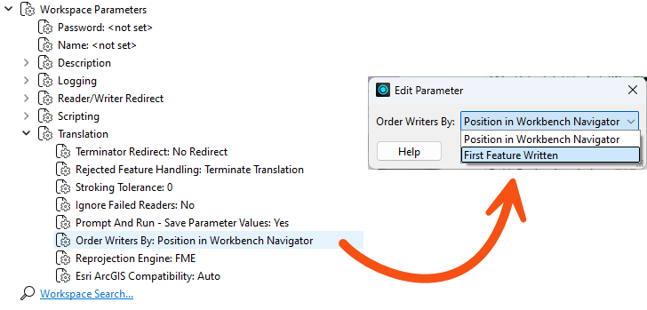

More information on database performance with FME comes in the later lesson, Optimize Database Performance.
After completing this lesson, you’ll be able to:
There are various ways to speed up writing data. Compared to reading, tuning the underlying systems is a more critical improvement; the number of features is less significant as it's much harder to write extra data unintentionally.
If you are writing to a file system, make sure the disk is fast and responsive – use solid-state drives – and that the operating system is not busy writing other files simultaneously, as the latter could cause a significant bottleneck.
Also, check if you are using RAID; some configurations need multiple writes and can slow down a translation.
If you are writing to a database, existing indexes and joins can slow the process down. In many cases, it's quicker to drop an index, write the data, and recreate it.
More information on database performance with FME comes in the later lesson, Optimize Database Performance.
The most important technique for improving writer performance involves the scenario where a workspace has multiple writers. In short, you must ensure that the writer receiving the most data is written first.
While feature counts entering writer feature types are an approximation of the size of your data, the size of features can vary wildly. Compare a feature with a single short integer attribute and no geometry to a feature with a large satellite image or one with hundreds of complex attributes or list attributes. To determine an optimal writer order, you should take the size of features into account as well.
The reasoning is that the first writer in a workspace starts to write data as soon as it is received. Other writers cache theirs until they are ready to start writing. Therefore, if the workspace writes the largest amount of data immediately, it won't have to store as much data in a cache. This can improve performance tremendously, mainly when the translation is unbalanced; for example, one million features go to one writer, and only ten go to another.
Think of it as an airport. Loading the busiest flights first is more efficient because it quickly empties the terminal waiting areas. For more information, see this blog post.
There are two ways to affect writing order.
Firstly, each writer is listed in the Navigator window in Workbench and can be re-ordered by moving them up and down in the list in the Navigator window:

The first writer in the list will write first. Therefore, it should be the one to receive the most data.
The second method is to use a workspace parameter called Order Writers By:

If you set this parameter to Position in Workbench Navigator, the order of writers defined in the Navigator takes priority. If you set it to First Feature Written, the writer receiving the first feature will be the first to start writing data.